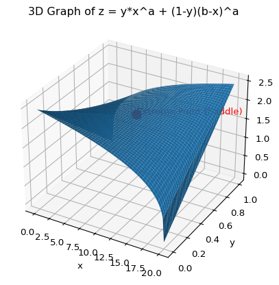
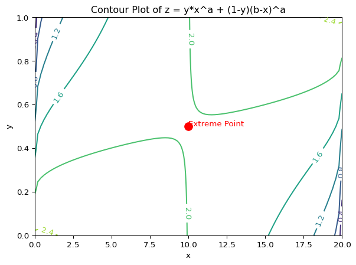

Code
#@title Utilitarian objective function
import numpy as np
import matplotlib.pyplot as plt
from mpl_toolkits.mplot3d import Axes3D
from scipy.optimize import minimize
# 함수 정의
def z_function(x, y, a, b):
return y * (x**a) + (1 - y) * ((b - x)**a)
# x, y 범위 및 매개변수 설정
a = 0.3 # 매개변수 a 값 (0과 1 사이)
b = 20 # 매개변수 b 값
x = np.linspace(0, b, 100) # x 범위: 0부터 20까지 100개의 점
y = np.linspace(0, 1, 100) # y 범위: 0부터 1까지 100개의 점
X, Y = np.meshgrid(x, y) # x, y 좌표 격자 생성
# Z 값 계산
Z = z_function(X, Y, a, b)
def negative_z_function(params):
x, y = params
return -z_function(x, y, a, b) # 최솟값을 찾기 위해 음수 값 반환
# 초기값 설정 (interior 범위 내)
initial_guess = [b / 2, 0.5]
# 경계 조건 설정
bounds = [(0, b), (0, 1)]
# 최적화 실행
result = minimize(negative_z_function, initial_guess, bounds=bounds)
# 결과 추출
extreme_point_x, extreme_point_y = result.x
extreme_point_z = z_function(extreme_point_x, extreme_point_y, a, b)
print("Extreme Point (x, y, z):", extreme_point_x, extreme_point_y, extreme_point_z)
# Calculate Hessian matrix
def hessian_matrix(x, y, a, b):
"""Calculates the Hessian matrix of the z_function."""
d2z_dx2 = a * (a - 1) * (y * (x**(a - 2)) + (1 - y) * ((b - x)**(a - 2)))
d2z_dy2 = 0 # Second derivative with respect to y is 0
d2z_dxdy = a * (x**(a - 1) - (b - x)**(a - 1))
d2z_dydx = d2z_dxdy # Mixed partial derivatives are equal
return [[d2z_dx2, d2z_dxdy], [d2z_dydx, d2z_dy2]]
# Determine the type of extreme point
hessian = hessian_matrix(extreme_point_x, extreme_point_y, a, b)
determinant = np.linalg.det(hessian)
if determinant > 0 and hessian[0][0] > 0:
extreme_type = "Minimum"
elif determinant > 0 and hessian[0][0] < 0:
extreme_type = "Maximum"
else:
extreme_type = "Saddle"
print("Extreme Point Type:", extreme_type)
# 3D 그래프 그리기
fig = plt.figure()
ax = fig.add_subplot(111, projection='3d')
ax.plot_surface(X, Y, Z)
ax.set_xlabel('x')
ax.set_ylabel('y')
ax.set_zlabel('z')
plt.title('3D Graph of z = y*x^a + (1-y)(b-x)^a')
# global interior extreme point 표시
ax.scatter(extreme_point_x, extreme_point_y, extreme_point_z, color='red', marker='o', s=100)
ax.text(extreme_point_x, extreme_point_y, extreme_point_z, f'Extreme Point ({extreme_type})', color='red')
plt.show()
# Contour Plot 그리기
fig, ax = plt.subplots()
contour = ax.contour(X, Y, Z)
ax.set_xlabel('x')
ax.set_ylabel('y')
plt.title('Contour Plot of z = y*x^a + (1-y)(b-x)^a')
plt.clabel(contour, inline=1, fontsize=10)
# global interior extreme point 표시
ax.scatter(extreme_point_x, extreme_point_y, color='red', marker='o', s=100)
ax.text(extreme_point_x, extreme_point_y, 'Extreme Point', color='red')
plt.show()Extreme Point (x, y, z): 10.0 0.5 1.9952623149688795
Extreme Point Type: Saddle
